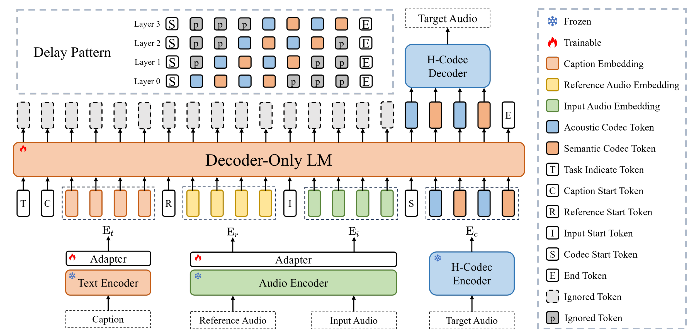
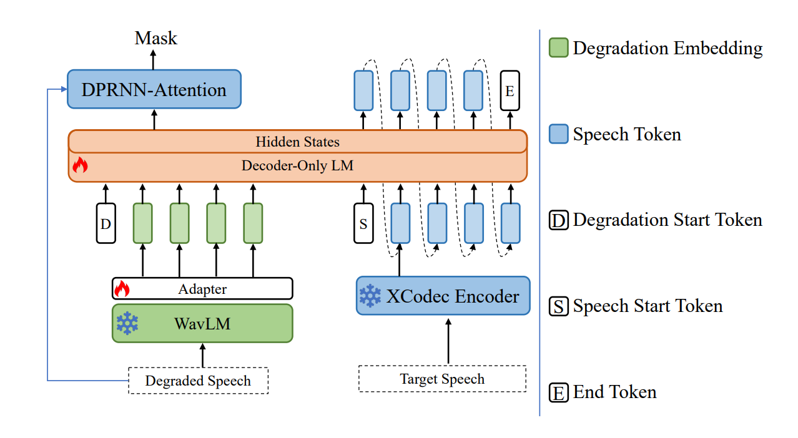
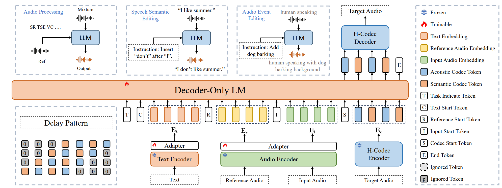
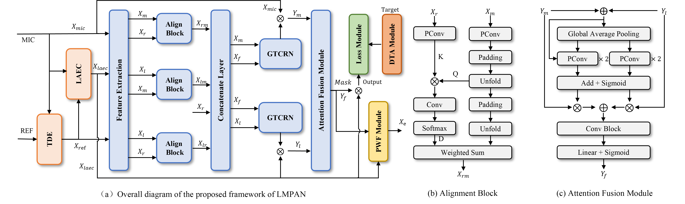
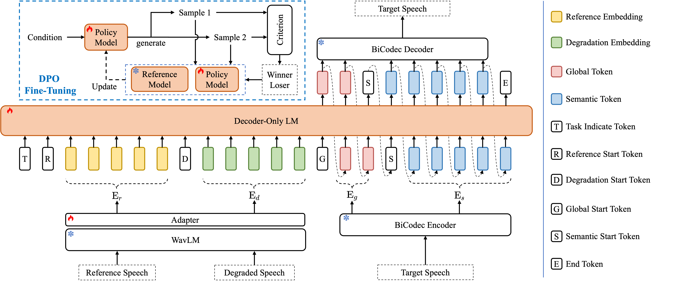

I am a Senior Research Scientist in the Alibaba QuarkAudio Team. I lead the development of the QuarkAudio series, exploring a unified framework to handle different audio processing and generation tasks (speech, music, and general audio events).
🔥 News
- 2026.01: 🎉 Our hybrid system paper is accepted to ICASSP 2026! We achieved 3rd place in the URGENT 2026 Challenge (Track 1).
- 2025.12: Released QuarkAudio, an Open-Source Project to Unify Audio Processing and Generation.
- 2025.10: Released UniTok-Audio, supporting SOTA target speaker extraction and voice conversion.
- 2025.09: Released UniSE foundation model for unified speech generation.
📝 Selected Publications



🏗️ Working Papers

A lightweight alignment network for full-duplex AEC and NS, optimized for real-time communication.
INTERSPEECH 2026, Submitted.
A decoder-only AR-LM framework tailored for high-quality universal speech enhancement. (*Equal contribution, #Corresponding author)
INTERSPEECH 2026, Submitted.Exploring large-scale unified foundation models for seamless speech-audio-language integration.
Developing a language-guided audio editing framework using Chain-of-Thought reasoning.
🎖 Honors and Awards
- Outstanding graduate of Chinese Academy of Sciences (国科大) (Top 5%) 2022.07
- National Scholarship (Master) 2021.10
- National Scholarship (Undergraduate) 2018.10
- National Mathematics Competition for College Students - Second Prize 2017.09
💻 Experience
Alibaba Group - Senior Audio Algorithm Engineer
Leading the open-source QuarkAudio project in QuarkAudio Lab.
Horizon Robotics (地平线) - Speech Algorithm Researcher
On-device speech enhancement and hardware-aware audio algorithms.
🎓 Education
University of Chinese Academy of Sciences (国科大) - M.S. in Acoustics
Ocean University of China (中国海洋大学) - B.S. in Marine Technology